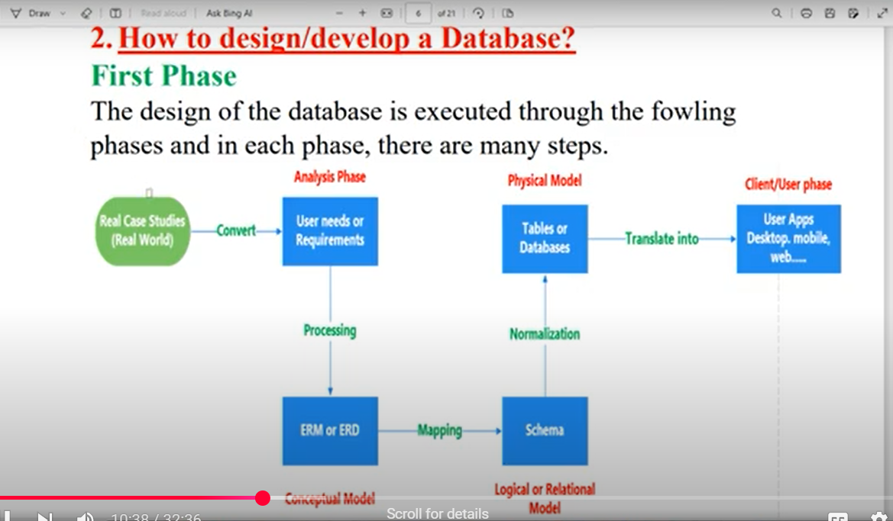

Database
The image illustrates the process of designing and developing a database, starting from real-world case studies. The first phase, analysis, involves identifying user needs and requirements, which are then processed into an ERM or ERD model. This conceptual model is mapped into a logical or relational schema. The schema undergoes normalization before being translated into physical tables or databases. Finally, the database is integrated into user applications, such as desktop, mobile, or web apps. This structured approach ensures an efficient and well-organized database system.
